World Models Can Leverage Human Videos for Dexterous Manipulation
按照 OpenMOSS 内容脉络整理的证据驱动深度精读
1. 论文速览
1.1 一句话贡献
训练灵巧操作 world model，从大量人类/机器人视频学习手-物交互动态，并迁移到真实机器人规划。
1.2 论文速览
DexWM 学习的不是动作策略，而是动作导致的未来视觉 latent。它用人类第一视角视频和非灵巧机器人视频预训练 hand-object interaction dynamics，再用少量灵巧机器人探索数据适配，最后通过 CEM/MPC 搜索能让预测状态接近目标图像的动作。它是这组论文中最贴近 WAM/model-based manipulation 的工作。
1.3 关键词
关键词：DexWM; world model; human videos; hand consistency; latent dynamics; dexterous manipulation
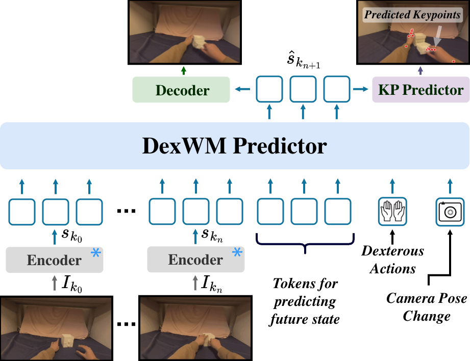
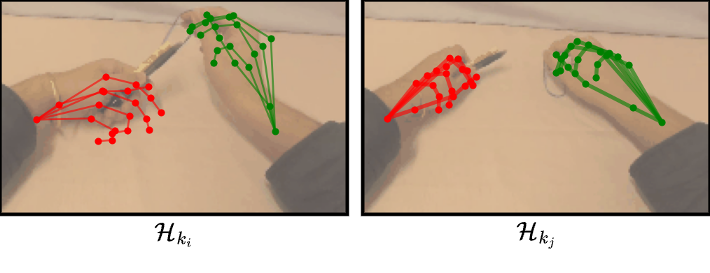
2. 研究问题与动机
2.1 核心问题
灵巧手 world model 需要理解指尖级动作如何改变物体，但真实灵巧机器人视频稀缺。
2.2 研究动机
普通视频模型缺乏精细动作条件，直接 policy 又只能解决训练过的任务。
2.3 为什么现有方法不够
DexWM 的动机是利用大规模人类视频学习可迁移的交互动力学，并通过统一 hand keypoint action 跨越人手、平行夹爪和 Allegro 手之间的 embodiment gap。
2.4 替代路线为何不选
论文试图回答：世界模型能否从人类和机器人视频中学到足够细的手物动态，从而支持真实灵巧手规划。
2.5 关键假设与成立条件
作者放弃直接学 policy，而是先学动作条件下的未来状态预测，再把规划交给 CEM/MPC。
3. 相关工作脉络
3.1 论文自述的相关工作
它区别于无动作条件的视频生成模型，也区别于直接 observation-to-action 的 Diffusion Policy。
3.2 直接前作
状态预测采用视觉 latent world model 路线；
3.3 替代技术路线
动作表示借鉴人体/手部关键点；
3.4 本文的独特位置
测试时采用 model predictive control。
3.5 补充要点 5
与 DWM 相比，DexWM 更强调 latent dynamics 可用于真实机器人规划，而不是生成高保真交互视频。
3.6 补充要点 6
与普通视频 world model 相比，DexWM 更强调手物接触与动作条件。
3.7 补充要点 7
与 DWM 的高保真视频生成路线相比，DexWM 更偏向 latent dynamics 与真实机器人规划。
4. 方法详解
4.1 总体方法流程
图像由冻结 DINOv2-L 编码成 patch latent；
4.2 核心表示
动作由两个时刻之间的手部 3D keypoint 变化和 camera motion 表示。
4.3 训练阶段
对于 DROID 平行夹爪，作者构造 dummy keypoints 统一动作词汇。
4.4 推理与部署
Conditional Diffusion Transformer 根据当前 latent 与动作预测未来 latent，并通过 hand consistency loss 监督指尖和腕部 heatmap。
4.5 关键模块一
测试时 CEM 在机器人关节轨迹空间采样，经运动学映射为 DexWM action，rollout 后以目标 latent/keypoint 代价排序。
4.6 关键模块二
状态采用冻结 DINOv2 patch latent，动作采用手部 3D keypoint 变化与相机运动。
4.7 关键模块三
Conditional Diffusion Transformer 预测给定动作后的未来 latent，hand consistency loss 强化指尖和手腕信息。
4.8 方法小结
测试时以目标图像定义代价，CEM 在候选动作序列中搜索，让 rollout 接近目标状态。
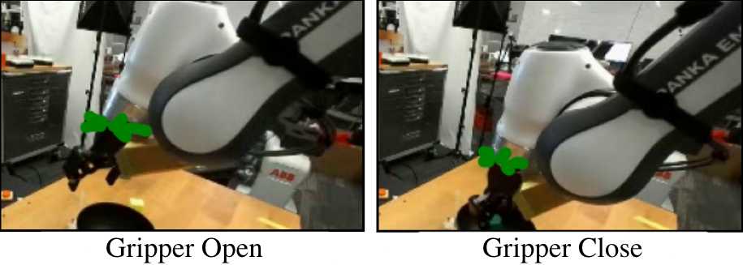
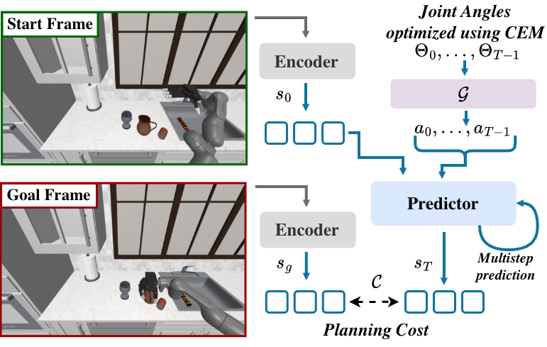
5. 实验与结果
5.1 实验设置
EgoDex 约 829 小时人类视频与 DROID 约 100 小时机器人视频构成主要预训练数据。
5.2 数据与任务
关键消融显示加入 EgoDex 后，RoboCasa open-loop prediction 优于仅用 DROID。
5.3 评估指标
反事实 rollout 通过改变手部动作展示未来预测随条件变化。
5.4 主结果
真实 Franka+Allegro 的抓取实验报告约 83% 成功率，并展示 reach/grasp/place 规划，但真实评估规模相对有限。
5.5 消融分析
EgoDex 加 DROID 与 DROID-only 的比较用于检验人类视频预训练对机器人规划的帮助。
5.6 定性结果
counterfactual rollout 比漂亮视频更关键，因为它检查动作变化是否真的改变未来预测。
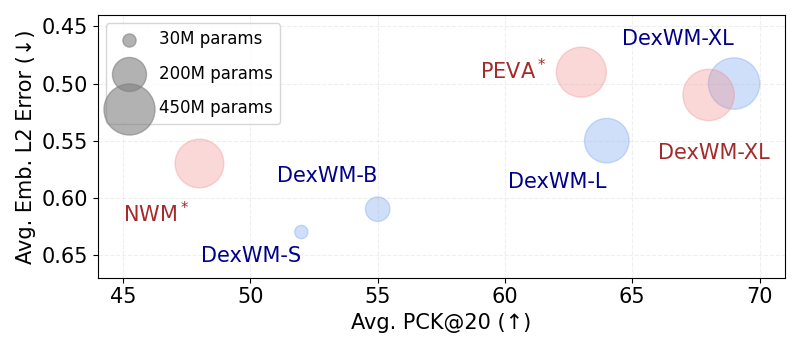
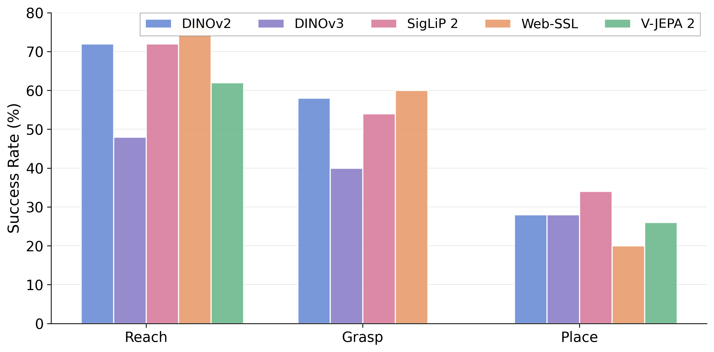
6. 复现要点
6.1 最小可行复现路径
复现首先需要处理 EgoDex 的 3D hand keypoints、camera pose 与 DINOv2 latent，并统一 DROID dummy keypoint 表示。
6.2 数据准备
训练需要较大 batch 和大量视频；
6.3 模型与训练设置
之后还需采集少量目标机器人探索数据。
6.4 硬件与部署要求
规划端要实现机器人运动学映射、CEM 参数和目标图像代价。
6.5 复现风险
建议先验证 open-loop prediction 与 counterfactual action control，再接入真实 MPC。
6.6 补充要点 6
推荐顺序是数据预处理、latent transition、action-conditioned counterfactual rollout、CEM 规划，最后才是真实 Allegro。
6.7 补充要点 7
主要成本来自大规模视频预训练、手部 keypoint 提取、目标代价设计和真实 MPC 调试。
7. 分析、局限与边界
7.1 最有价值的贡献
DexWM 证明人类视频动态先验可以进入机器人规划闭环，但 keypoint action 不包含显式接触力、摩擦或手掌表面几何。
7.2 证据为何站得住
视觉 latent 接近目标也不必然代表物理稳定。
7.3 作者局限
真实实验对象和轨迹数量较少，而且真实部署未充分展示长时 receding-horizon 纠错，因此更像 proof of transfer，而非成熟通用控制器。
7.4 额外边界
我的阅读判断：这是 WAM 方向首推。复现顺序应是数据预处理→latent prediction→action-conditioned counterfactual rollout→CEM 仿真规划，最后才考虑真实 Allegro。可进一步研究触觉/力觉 action-state 表示。
8. 组会问答准备
8.1 问题一
Q1：DexWM 与 Diffusion Policy 的根本区别？
8.2 问题二
答：前者预测动作后果并在测试时规划，后者直接预测动作。
8.3 问题三
Q2：为何用 hand keypoints？
8.4 问题四
答：在不同人手和机器人之间提供共享动作描述。
8.5 问题五
Q3：EgoDex 的证据？
8.6 补充问题
答：EgoDex+DROID 的预测指标优于 DROID-only。
8.7 补充要点 7
Q4：hand consistency loss 为何重要？
8.8 补充要点 8
答：防止视觉 latent 忽略对灵巧操作关键的手部构型。
8.9 补充要点 9
Q5：最大弱点？
8.10 补充要点 10
答：真实评估小，且动作表示缺少接触力。
9. 补充图解与附录证据
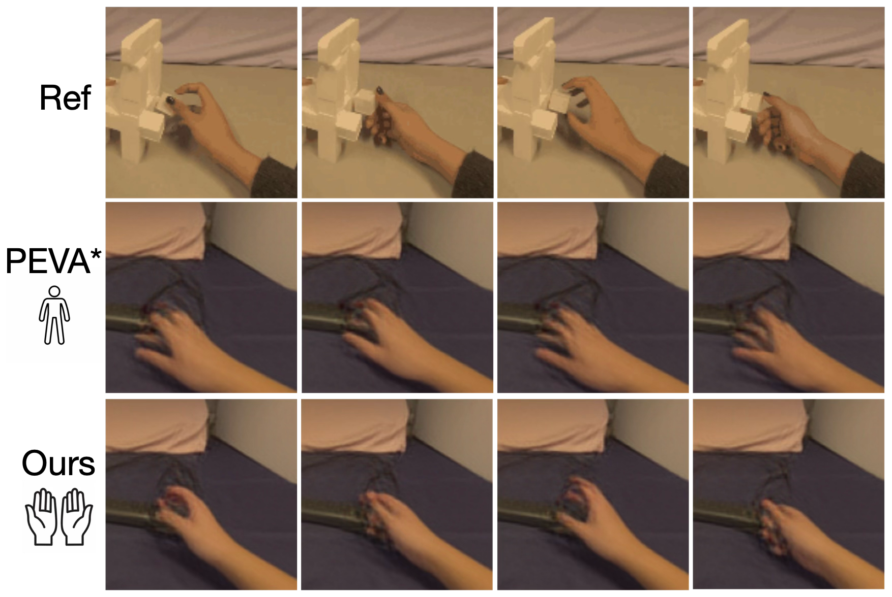
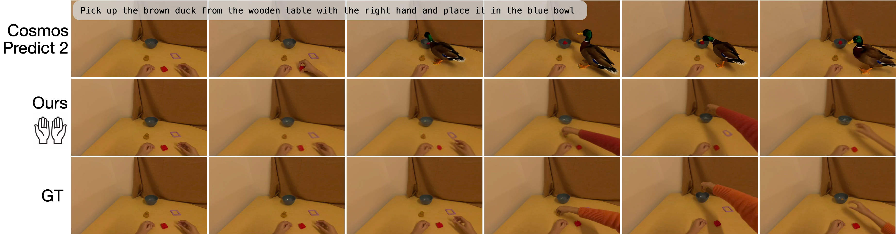


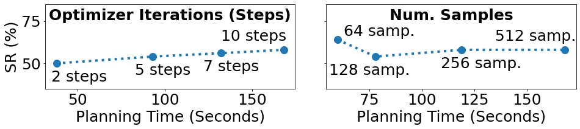
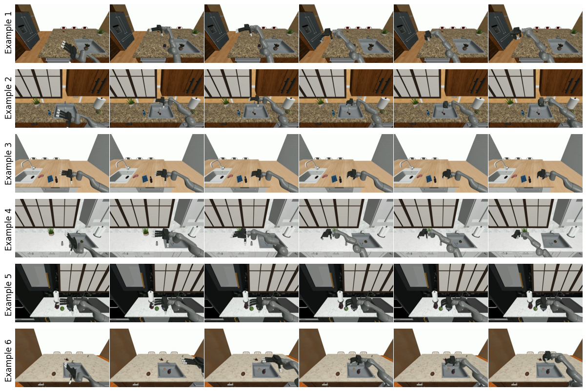
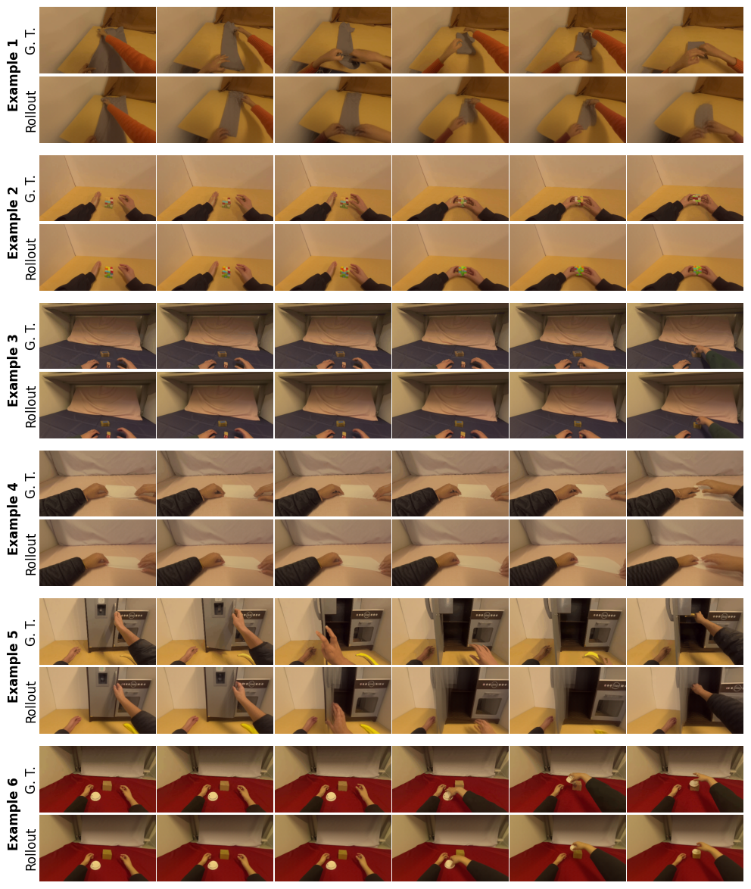
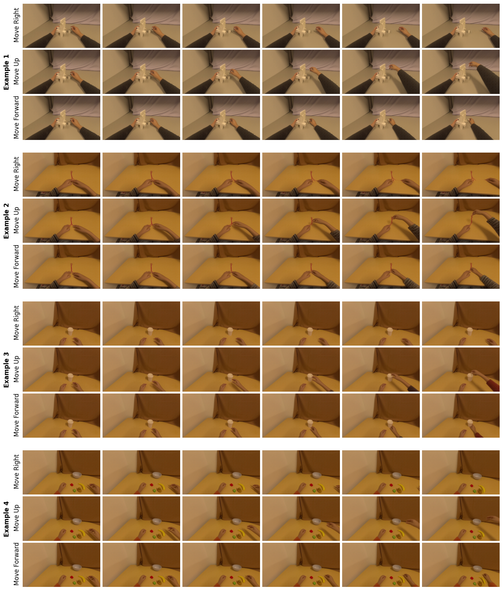